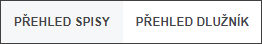
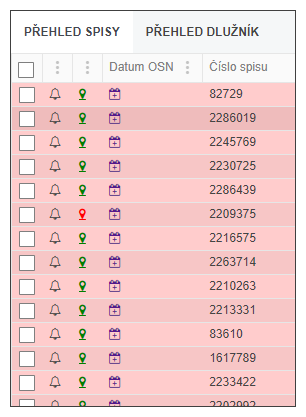
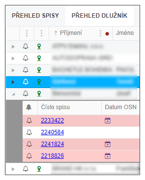

Menu SEZNAM
Menu - dvě tlačítka, které umožní zobrazit spisy ve dvou podobách.

Přehled SPISY ukazuje všechny spisy v daném stavu, tedy v konkrétní záložce.
V tomto zobrazení je co spis, to jeden řádek.
V každé záložce jsou zobrazeny spisy dle jednotlivých stavů, v jednotlivých záložkách jsou spisy zvýrazněny i barevně.
Přehled DLUŽNÍK ukazuje všechny dlužníky (nikoliv tedy spisy), přičemž po rozkliknutí šipky před jménem dlužníka jsou zobrazeny všechny spisy dlužníka s barevným rozlišením jejich stavu.
V tomto zobrazení je definováno, že co dlužník, to jeden řádek. Seznam pod dlužníkem je řešen tak, že co řádek to jeden spis konkrétního dlužníka, včetně barevného rozlišení.
Ovládání seznamu je popsáno dále.